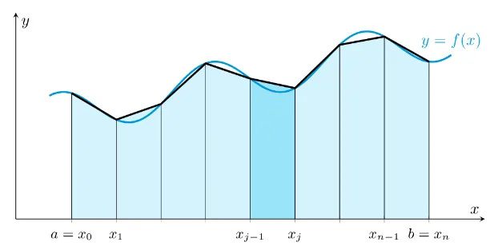

The Trapezoidal Rule is a fundamental numerical integration technique employed to approximate definite integrals, especially when an exact antiderivative of the function is difficult or impossible to determine analytically. This method is widely used in various fields such as engineering, physics, and economics due to its simplicity and effectiveness. The core idea behind the Trapezoidal Rule is to estimate the area under a curve by dividing it into a series of trapezoids, rather than relying solely on simpler geometric shapes like rectangles. By approximating the region under the graph of a function with trapezoids, this method provides a better fit to the actual curve, thereby enhancing the accuracy of the integral approximation compared to basic methods like the Rectangle (Midpoint) Rule.
The mathematical foundation of the Trapezoidal Rule is based on the assumption that the region under the graph of a function $f(x)$ over a given interval $[a, b]$ can be approximated by a trapezoid. A trapezoid is a quadrilateral with at least one pair of parallel sides, which in this context are the lines connecting the points $(a, f(a))$ and $(b, f(b))$. The area of this trapezoid provides an estimate of the definite integral of the function over the interval $[a, b]$.
The basic formula for the Trapezoidal Rule when applied to a single interval $[a, b]$ is:
$$ \frac{b - a}{2} [f(a) + f(b)] $$
This formula calculates the area of the trapezoid by taking the average of the function values at the endpoints $f(a)$ and $f(b)$, and then multiplying by the width of the interval $(b - a)$. This approximation assumes that the function behaves linearly between the two endpoints, which is a reasonable assumption for small intervals or functions that do not vary drastically.
To improve the accuracy of the approximation, the interval $[a, b]$ can be divided into $n$ smaller subintervals of equal width. Let $h$ represent the width of each subinterval, calculated as:
$$ h = \frac{b - a}{n} $$
Within each subinterval $[x_i, x_{i+1}]$, the function $f(x)$ is evaluated at the endpoints $x_i$ and $x_{i+1}$. The area of each trapezoid within these subintervals is then computed using the formula:
$$ \frac{f(x_{i+1}) + f(x_i)}{2} h $$
The integral $I$ over the entire interval $[a, b]$ is then approximated by summing the areas of all the trapezoids:
$$ I = \sum_{i=0}^{n-1} \frac{f(x_{i+1}) + f(x_i)}{2} h $$
This summation effectively aggregates the contributions of each trapezoid to estimate the total area under the curve $f(x)$ across the interval. The graphical representation below illustrates how the Trapezoidal Rule approximates the area under a curve by stacking trapezoids side by side:

In this diagram, each trapezoid corresponds to a subinterval $[x_i, x_{i+1}]$, with the parallel sides representing the function values $f(x_i)$ and $f(x_{i+1})$. The height of each trapezoid is the width $h$ of the subinterval, and the area of each trapezoid contributes to the overall approximation of the integral.
Implementing the Trapezoidal Rule involves a systematic process to ensure an accurate approximation of the definite integral. The following steps outline the procedure:
I. Partition the Interval:
$$ h = \frac{b - a}{n} $$
This step ensures that the interval is evenly partitioned, facilitating consistent application of the Trapezoidal Rule across all subintervals.
II. Evaluate Function at Endpoints:
III. Apply the Trapezoidal Rule Formula:
$$ \frac{f(x_{i+1}) + f(x_i)}{2} h $$
IV. Aggregate the Results:
Sum the areas of all the trapezoids computed in the previous step to obtain the total integral approximation:
$$ I = \sum_{i=0}^{n-1} \frac{f(x_{i+1}) + f(x_i)}{2} h $$
By meticulously following these steps, the Trapezoidal Rule systematically approximates the integral by leveraging the linear behavior of the function within each subinterval. This method balances simplicity and accuracy, making it a practical choice for a wide range of numerical integration problems.
To illustrate the application of the Trapezoidal Rule, consider the function $f(x) = x^2$. This example demonstrates how the method approximates the integral over a specific interval using a manageable number of subintervals.
I. Choose Interval and Subdivisions:
$$ h = \frac{2 - 0}{2} = 1 $$
This results in two subintervals: $[0, 1]$ and $[1, 2]$, each with a width of 1.
II. Evaluate Function at Endpoints:
Compute the function values at the endpoints of each subinterval:
For the first subinterval $[0, 1]$:
For the second subinterval $[1, 2]$:
These evaluations provide the necessary data points for calculating the areas of the trapezoids.
III. Apply the Trapezoidal Rule Formula:
Calculate the area of each trapezoid using the Trapezoidal Rule formula:
For $[0, 1]$:
$$ \frac{1 - 0}{2} [f(0) + f(1)] = \frac{1}{2} (0 + 1) = 0.5 $$
For $[1, 2]$:
$$ \frac{2 - 1}{2} [f(1) + f(2)] = \frac{1}{2} (1 + 4) = 2.5 $$
These calculations yield the areas of the trapezoids corresponding to each subinterval.
IV. Sum the Areas:
Add the areas of the individual trapezoids to obtain the total integral approximation:
$$ I = 0.5 + 2.5 = 3 $$
This sum represents the estimated value of the definite integral of $f(x) = x^2$ over the interval $[0, 2]$ using the Trapezoidal Rule.
V. Compare with Exact Integral:
For validation, compute the exact value of the integral analytically:
$$ \int_{0}^{2} x^2 \, dx = \left[\frac{x^3}{3} \right]_0^2 = \frac{8}{3} \approx 2.6667 $$
The Trapezoidal Rule approximation of 3 is reasonably close to the exact value of approximately 2.6667, demonstrating the method's effectiveness even with a small number of subintervals.
This example highlights the practical application of the Trapezoidal Rule and illustrates how it provides a balance between computational simplicity and accuracy. While the approximation is not exact in this case, it is sufficiently close for many practical purposes, especially when dealing with functions that do not exhibit extreme behavior within the interval of integration.